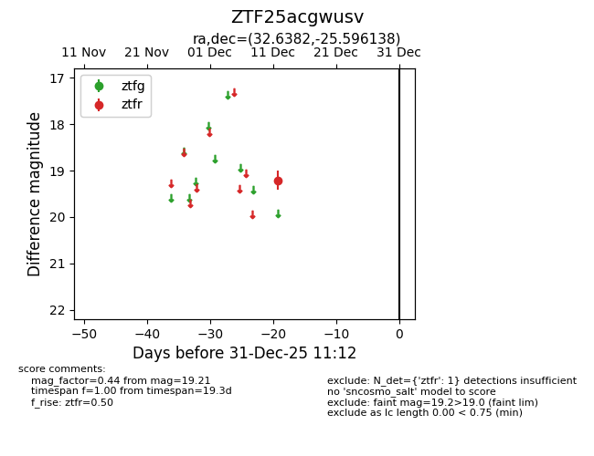
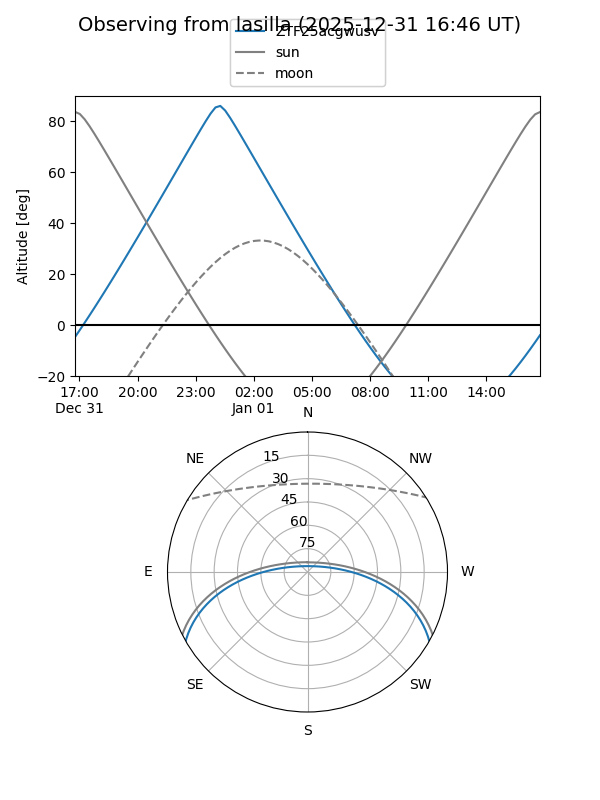
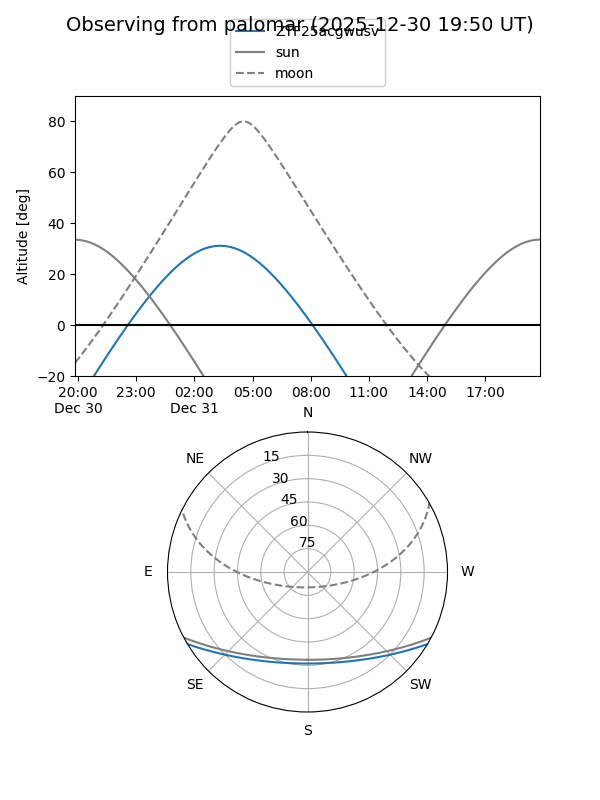

ZTF25acgwusv
Target ZTF25acgwusv at 2026-01-09 12:49
Aliases and brokers:
FINK: link
Lasair: link
ALeRCE: link
alt names
ZTF25acgwusv (ztf,fink_ztf)
Coordinates:
equatorial (ra, dec) = 32.6382,-25.59614
equatorial (HMS+DMS) = 02:10:33.18,-25:35:46.10
galactic (l, b) = (212.4669,-72.23040)
Flags:
Photometry:
last ztfr=19.21
1 ztfr detections
Lightcurve

Visibility


Additional plots